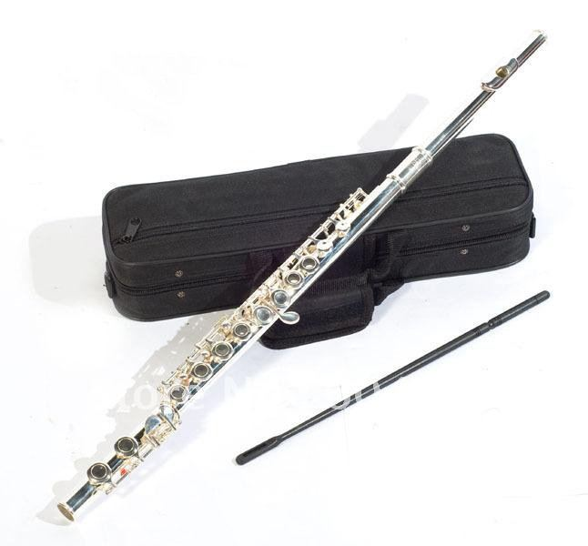

About ME
The Importance of Music
Music fuels the mind and thus fuels our creativity. A Creative mind has the ability to make discoveries and create innovations. The greatest minds and thinkers like Albert Einstein, Mozart, and Frank Lloyd Wright all had something in common in that they were constantly exploring their imagination and creativity.Listening to instrumental music challenges one to listen and tell a story about what one hears. In the same sense, playing a musical instrument gives you the ability to tell the story without words. Both require maximum right brain usage which not only exercises ones creativity but also ones intellect.The strength of all the Arts including writing, painting, dance, and theater have the ability to create a similar effect.
